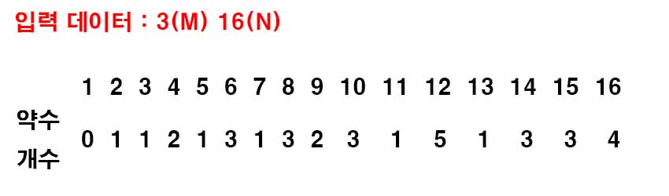
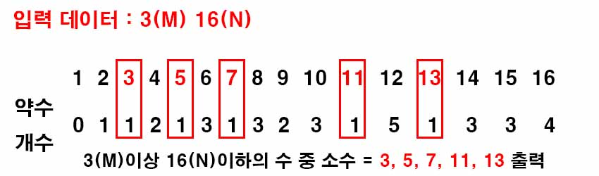

백준 1929. 소수 구하기
- https://www.acmicpc.net/problem/1929
-
문제 :
M이상 N이하의 소수를 모두 출력하는 프로그램을 작성하시오. -
입력 :
첫째 줄에 자연수 M과 N이 빈 칸을 사이에 두고 주어진다. (1 ≤ M ≤ N ≤ 1,000,000) M이상 N이하의 소수가 하나 이상 있는 입력만 주어진다. -
출력 :
한 줄에 하나씩, 증가하는 순서대로 소수를 출력한다. -
풀이 :
M과 N을 입력받으면 1부터 N까지의 소수를 구한 후, M이상 N이하의 소수를 출력하는 코드를 작성하기로 했다

소수는 1과 자기 자신만 약수로 가지는 수이므로 약수의 개수는 2개여야 한다. 2부터 시작해서 자신의 배수에 해당하는 수에 약수 개수를 1 늘린다.

1은 모든 자연수가 약수로 가지는 수이므로 1을 제외한 약수가 1개인 수가 소수므로 M이상 N이하인 수 중 약수 개수가 1개인 자연수를 출력한다.